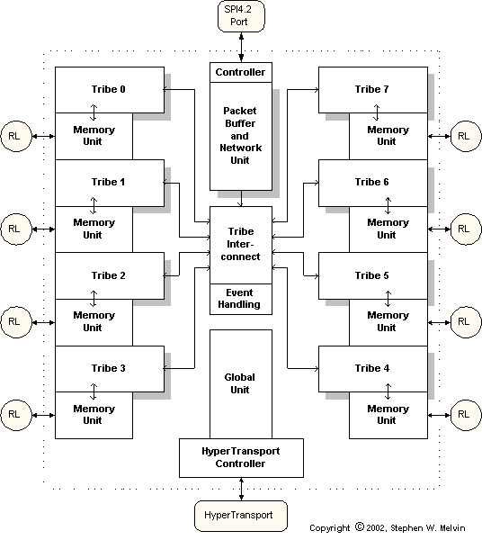

Porthos is optimized to sacrifice single threaded performance for efficiency, so that a design is achieved that is realizable in terms of silicon area and clock frequency. We refer to such an architecture as Massive Multithreading, or MMT. A maximum of one instruction can be executed from each of the threads depending on instruction dependencies and availability of resources. Porthos can achieve a sustained execution rate of 40 instructions per cycle (5 instructions per cycle per tribe). The tribe pipeline structure that allows this is shown below.
Each tribe consists of three decoupled pipelines. The first is the instruction fetch pipeline in which, in a classic SMT fashion, two threads are selected for fetch in each cycle and each can fetch four instructions from a shared data cache. Thus the peak fetch rate is eight instructions per cycle per tribe (64 instructions per cycle across the entire chip). The second pipeline represents an SMP type of structure in which each thread is mostly independent. Each thread block contains a small ALU and a single ported register file. The third pipeline is the shared execute pipeline, in which complex ALU instructions and memory instructions are executed. This pipeline is a classic SMT pipeline in which three threads simultaneously execute in each cycle. Even though the peak execution rate is three instructions in the third pipeline, the sustained execution rate is greater since branch instructions and some simple ALU instructions are fully executed in the second pipeline.
The use of a general purpose ISA as well as other techniques achieves a design in which software porting issues are minimized. Thread synchronization is achieved utilzing an innovative mechanism in which threads waiting for short-term synchronization events simply stall and don't consume any global execution resources for busy wait. We use the term "Massive Multithreading", or MMT, to refer to processors with most of the following characteristics:
The following chart illustrates, that under certain assumptions for power consumption and memory latency, an optimal performance to power ratio can be achieved with single threaded performance well below the maximum achievable using current superscalar microarchitectures.
That is, even though it is possible to build pipelines that can support less than one cycle per instruction through the use of wide issue windows, out of order execution and branch prediction, when there are many threads available, this is wasteful in power. An optimal point is shown here to be on the order of four to five cycles per instruction. In practice, a peak CPI in the range of two to three was chosen as optimal taking into account packet dependencies.
Melvin, S., Nemirovsky, M., Musoll, E., Huynh, J., Milito, R., Urdaneta, H., and Saraf, K., "A Massively Multithreaded Packet Processor," Workshop on Network Processors - NP2, Held in conjunction with the 9th International Symposium on High-Performance Computer Architecture, February 8-9, 2003. Slides to Presentation
(A version of this paper also appears as Chapter 6 of Network Processor Design: Issues and Practices, Volume 2,
Morgan Kaufmann, 2003)
Published U.S. Patent Application US20030069920A1